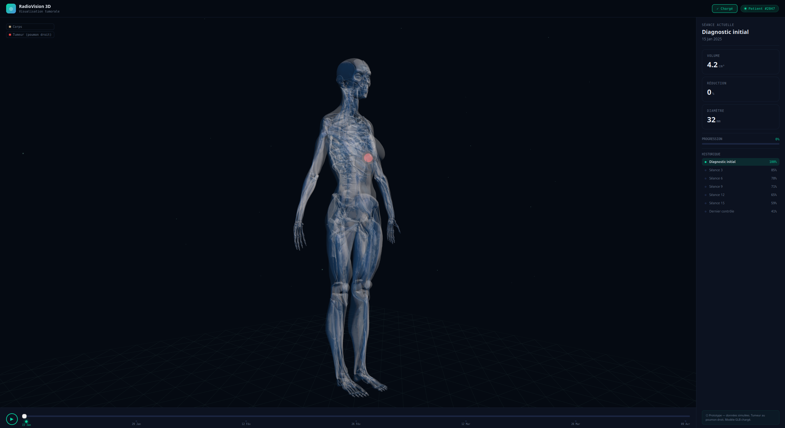
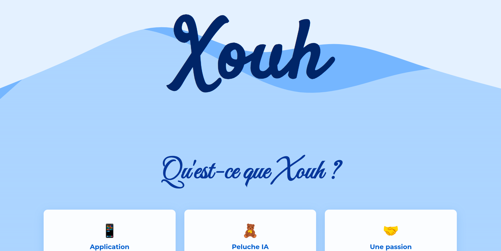

Découvrez nos dernières avancées
Ceci sont les avancées en modélisation 3D. Nous utilisons pour le moment un patient générique et les extensions .jlb et .jlTF, mais nous sommes maintenant en train d'étudier le parsing des .DICOM pour un rendu général. Ceci est un rendu qui ne sera pas du tout le final pour notre intégration ThreeJS à l'application Web finale. La partie graphique est réalisée juste pour des tests.
 En savoir plusCe site a été fini récemment et présente les différentes facettes du projet Xouh. Celui-ci est réalisé en natif HTML et CSS. Il est responsive et accessible.
 En savoir plus